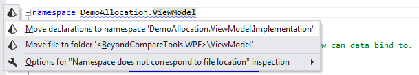

I have a rather involved Visual Studio solution (2010, but it shouldn't
matter) that I need to rename.
I want to rename the folders to match the new solution name, but I can't
figure out a way to refactor the folder names automatically, and going through
every single project file will be painful.
Is there an official way to do this?
Answer
Manually edit .sln file
This method is entirely aimed at renaming the directory for the project, as
viewed in Windows Explorer.
This method does not suffer from the problems in the Remove/add project file
method below (references disappearing), but it can result in problems if
your project is under source control (see notes below). This is why step 2
(backup) is so important.
- Close Visual Studio.
- Create a backup of your .sln file (you can always roll back).
- Imagine you want to rename directory
Project1 to Project2.
- If not using source control, rename the folder from
Project1 to Project2 using Windows Explorer.
- If using source control, rename the folder from
Project1 to Project2 using the functions supplied by source control. This preserves the history of the file. For example, with TortoiseSVN, right click on the file, select TortoiseSVN .. Rename.
- In the .sln file, edit all instances of
Project1 to be Project2, using a text editor like NotePad.
- Restart Visual Studio, and everything will work as before, but with the project in a different directory.
You can also see renaming solution manually or post which describes this
manual process.
Advantages
- You can make the directory within Windows Explorer match the project name within the solution.
- This method does not remove any references from other projects to this file (an advantage over the Remove/add project file method, see my other answer below).
Warnings
- It's important to back everything up into a .zip file before renaming anything, as this method can create issues with source control.
- If your project is under source control, it may create issues if you rename files or directories outside of source control (using Windows Explorer). Its preferable to rename the file using the source control framework itself , if you can, to preserve the history of that file (check out the context menu on a right click - it may have a function to rename the file).
Update 2014-11-02
ReSharper has added an automated method for achieving the same result as the
manual method above. If the namespace is underlined with a squiggly blue line,
click on the action pyramid icon to either:
- Rename the namespace to match the directory name in Windows Explorer, or;
- Rename the directory in Windows Explorer to match the namespace.
In the second case, the final word defines the new directory name in Windows
Explorer, e.g. if we changed the namespace to ViewModel2, it would offer to
move the file to folder ViewModel2.
However, this will not necessarily update files in source control, so you may
still have to use the manual method.

Update 2018-01-31
Tested with Visual Studio 2008, 2010, 2012, 2013, 2015, 2017 Update 1, 2, 3,
4, 5.
Update 2020-05-02
Tested with Visual Studio 2019.
Update 2021-11-19
Retested. Still works.
Update 2022-11-30
Latest version of Git should auto-detect file renames, so no extra care is
needed to preserve the history of diffs.
Suggest
To rename a solution:
-
In Solution Explorer, right-click the project, select Rename, and enter a new name.
-
In Solution Explorer, right-click the project and select Properties. On the Application tab, change the "Assembly name" and "Default namespace".
-
In the main cs file (or any other code files), rename the namespace declaration to use the new name. For this right-click the namespace and select Refactor > Rename enter a new name. For example: namespace WindowsFormsApplication1
-
Change the AssemblyTitle and AssemblyProduct in Properties/AssemblyInfo.cs.
[assembly: AssemblyTitle("New Name Here")]
[assembly: AssemblyDescription("")]
[assembly: AssemblyConfiguration("")]
[assembly: AssemblyCompany("")]
[assembly: AssemblyProduct("New Name Here")]
[assembly: AssemblyCopyright("Copyright © 2013")]
[assembly: AssemblyTrademark("")]
[assembly: AssemblyCulture("")]
-
Delete bin and obj directories physically.
-
Rename the project physical folder directory.
-
Open the SLN file (within notepad or any editor) and change the path to the project.
-
Clean and Rebuild the project.